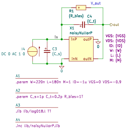

TrimpNoisyNullorP
.param W=220n L=180n M=1 ID=-1u VGS=0 VDS=-0.9
.param C_s=1p C_t=0.2p R_bias=1T
.lib lib/log018.l TT
.inc lib/noisyNullorP.lib
C3 in 0 {C_s}
C4 in out {C_t}
I4 0 in DC 0 AC 1 0
R1 in out {R_bias} noisy=0
X1 0 out in 0 noisyNullorP VGS={VGS} VDS={VDS} ID={ID} W={W} L={L} M={M}
.end
Go to TrimpNoisyNullorP_index
SLiCAP: Symbolic Linear Circuit Analysis Program, Version 4.0.8 © 2009-2025 SLiCAP development team
For documentation, examples, support, updates and courses please visit: analog-electronics.tudelft.nl
Last project update: 2025-12-13 16:59:40